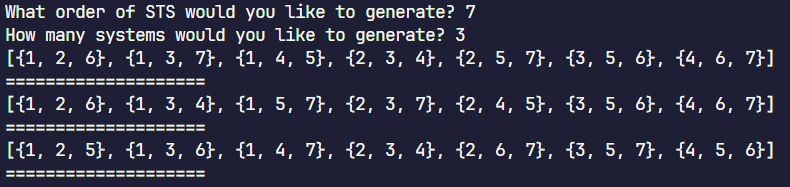

Steiner Triple Systems
Overview
An in-depth research project exploring Steiner Triple Systems. I researched and developed scripts and algorithms for generation, enumeration, and analysis of Steiner Triple Systems, furthering our understanding of these structures.
Extra information about Steiner Triple Systems: Wikipedia.
Impetus
After showing my skills to Dr. Schroeder, my Discrete Mathematics professor, he invited me to join him in his research of these structures, introducing me to my now-favorite field of mathematics.
- Interest in software development and algorithm design.
- Desire to learn more about combinatorics and graph theory.
- Challenge of furthering the field of combinatorics.
Usage & Output
Running the main.py file, you can generate any number of any valid order of Steiner Triple Systems.
- Usage: Simply clone the repo and run the
main.py script. You will be prompted to enter the order of the system(s) you wish to generate. Then, you will be prompted to enter how many systems you wish to generate.
- Output: The program will print the specified number of systems of the specified order to the console.

Skills Developed & Applied
- Python Programming: Enhanced proficiency in Python, particularly with self-created modules and object-oriented principles.
- Mathematical Reasoning: Deepened understanding of structure of graphs and graph algorithms, along with furthering the fields of combinatorics and graph theory.
- Algorithm Design: Analyzed and designed algorithms for complex mathematical structures, requiring a high level of abstract thinking.
- Problem-Solving: Applied logical reasoning to translate mathematical theory into executable code.